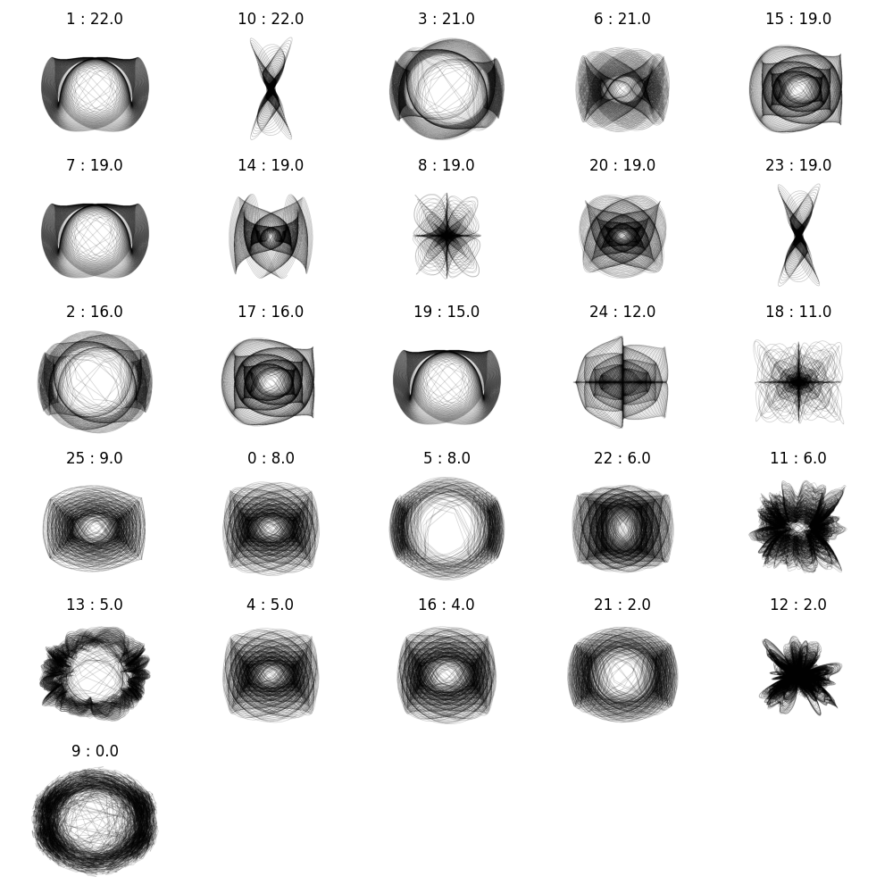

Guiding Bottom-Up Generative Modelling with Machine Learning
A unified framework using machine learning to translate design intent into controlled emergent behaviour in agent-based and multi-agent generative systems.

// 01Overview
This project aims to develop a unified computational design framework that guides the emergent, bottom-up behaviour of generative systems — such as agent-based and multi-agent models — through machine learning-driven, top-down control.
By training deep learning models (e.g., Vision Transformers) to map high-level, design-centred criteria to low-level generative parameters, the framework conditions and directs emergent outcomes. This enables designers to intuitively navigate and control expansive generative design spaces, allowing top-down intention to inform bottom-up processes. Publications and code will be posted here when available.
// 03Approach
An initial proof-of-concept uses a parametric Harmongraph system where a Vision Transformer ranks generations against specific criteria, providing a fitness signal for evolutionary search.
Harmongraph System
A parametric generative system producing complex visual patterns from sine-wave combinations, used as the initial testbed for the ML-guided design framework.
ViT-Based Ranking
A Vision Transformer (ViT) is trained to rank generated designs based on designer-specified criteria, providing a differentiable fitness signal for the evolutionary search process.
Evolutionary Search
Designs are evolved using ViT fitness scores as guidance, iteratively discovering parameter settings that produce outputs matching the designer's goals.
Top-Down Control
Machine learning acts as a translator of design intent: high-level criteria map to low-level generative parameters, redefining AI's role from stylistic automation to active guidance of emergent systems.